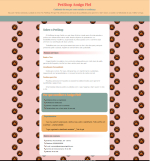

Esse sou eu!
Perfil Profissional
Sou profissional em início de carreira na área de Tecnologia da Informação, com base em desenvolvimento web, utilizando HTML e CSS.
Tenho experiência prática na criação de páginas responsivas e na organização de layouts simples. Busco minha primeira oportunidade na área de TI, onde eu possa aplicar meus conhecimentos, aprender continuamente e evoluir profissionalmente.
Resumo Profissional
Estou em fase inicial na área de Tecnologia da Informação, com foco prático em desenvolvimento web, utilizando HTML e CSS aplicados na prática.
Já desenvolvi páginas responsivas do zero, aplicando boas práticas de organização de layout e código. Atualmente, estudo JavaScript, aplicando conceitos básicos em pequenos testes e exercícios.
Tenho interesse em oportunidades de entrada na área de TI, estando aberto a diferentes funções que permitam aprendizado, crescimento profissional e contribuição com a equipe.
Competências Técnicas
Tecnologias
- HTML5
- CSS
- layouts responsivos (mobile first)
Ferramentas
- Visual Studio Code
- GitHub
Projetos
PetShop Amigo Fiel
Site institucional fictício desenvolvido para estudo, com foco em HTML5, CSS3 e responsividade.

Formação
Tecnólogo em Análise e Desenvolvimento de Sistemas - em andamento.
Objetivo na Área de TI
Busco uma oportunidade de entrada na área de Tecnologia da Informação, onde eu possa aplicar meus conhecimentos iniciais, adquirir experiência prática e crescer profissionalmente.
Possuo base em desenvolvimento web, mas estou aberto a diferentes áreas da TI que proporcionem aprendizado e evolução contínua.